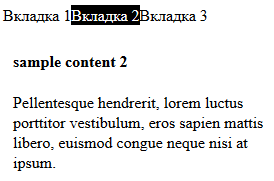

Laba 2. Таблицы стилей css и все такое
Задание к лабе выглядит так:
1.Создать простой HTML-документ с произвольным содержимым, как минимум, содержащий блочные элементы (они понадобятся для демонстрации стилей).
2.Показать в созданном документе три способа использования каскадных таблиц стилей:
inline-описание (используется атрибут style);
с помощью контейнера style в секции заголовка;
подключить стилевую таблицу, расположенную во внешнем файле;
3.Используя селекторы CLASS и ID, показать использование стилей (например, для форматирование шрифта, текста, изменения фона документа и т.д.)
4.Показать использование абсолютного и относительного позиционирования.
5.Показать использование плавающей модели (свойство float).
6.Добавить в документ элементы согласно варианту.
А вариант выглядит так:
Добавить на страницу элемент, сдержащий переключаемые вкладки. Пример на рисунке.

Кстати, для этого блока используется inline описание стилей и абсолютное позиционирование